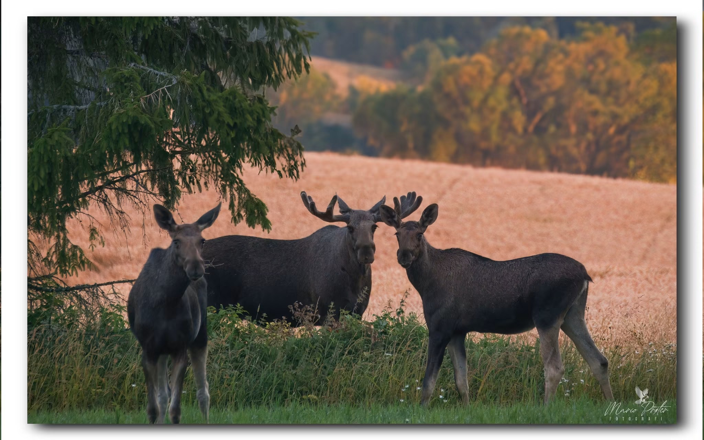
SIGNATURE
Norwegian Dawn
Elchfamilie im goldenen Morgenlicht
30×45 cm 49 €40×60 cm 79 €50×75 cm 119 €
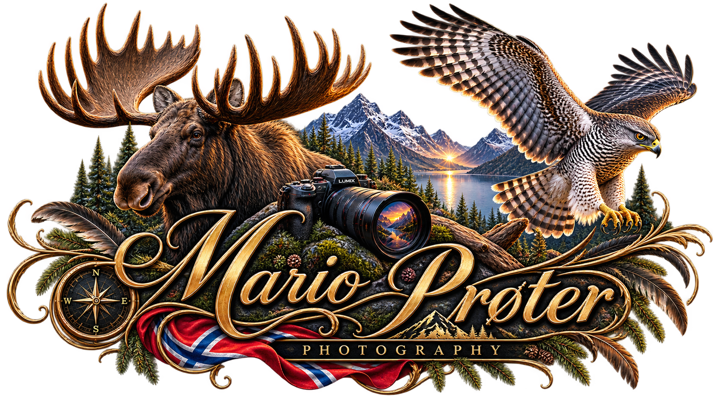
WILD NORWAY · FINE ART PHOTOGRAPHY
Ausgewählte Natur- und Wildlife-Aufnahmen als hochwertige Fine-Art-Prints.
Kollektion entdeckenLIMITED COLLECTION
Eine kuratierte Auswahl meiner stärksten Motive aus der norwegischen Natur. Prints werden auf Anfrage gefertigt.

Elchfamilie im goldenen Morgenlicht

Moschusochsen im norwegischen Fjell
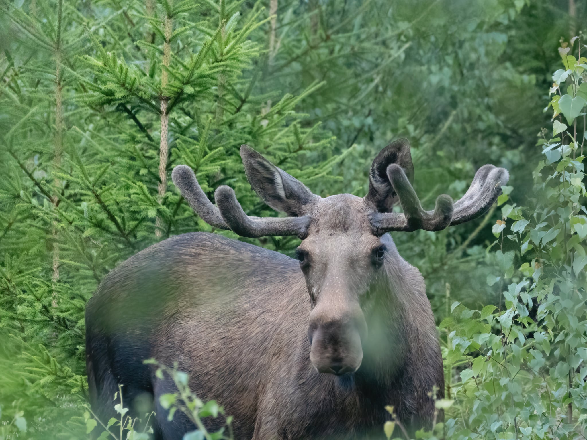
Elch im Fichtenwald
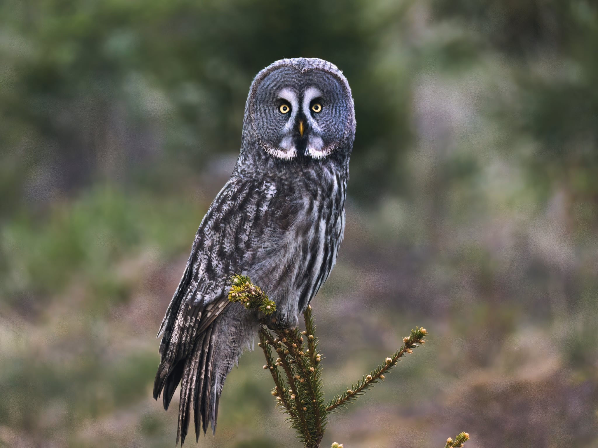
Bartkauz – intensives Wildlife-Porträt
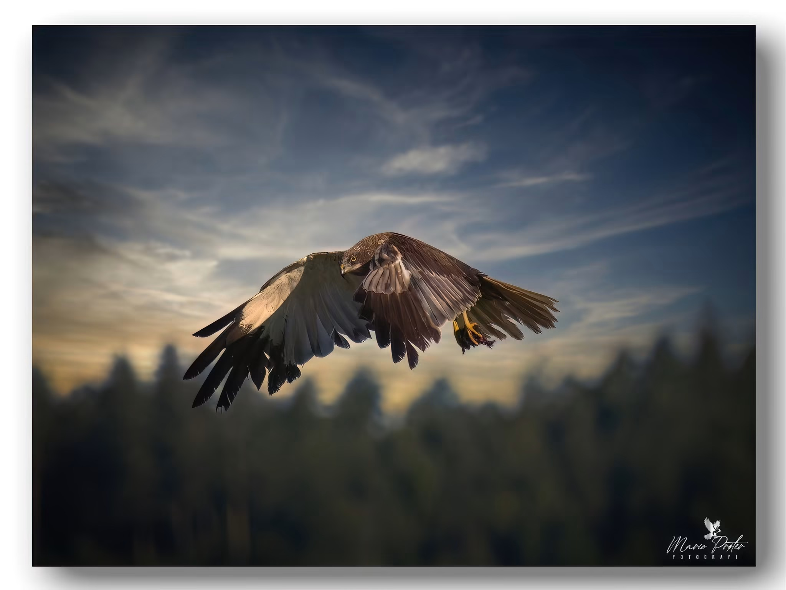
Greifvogel – Kraft und Ruhe

Dampflok im tiefen Schnee
Preise zzgl. Versand. Papier, größere Formate und signierte/limitierte Editionen auf Anfrage.
Weitere Arbeiten
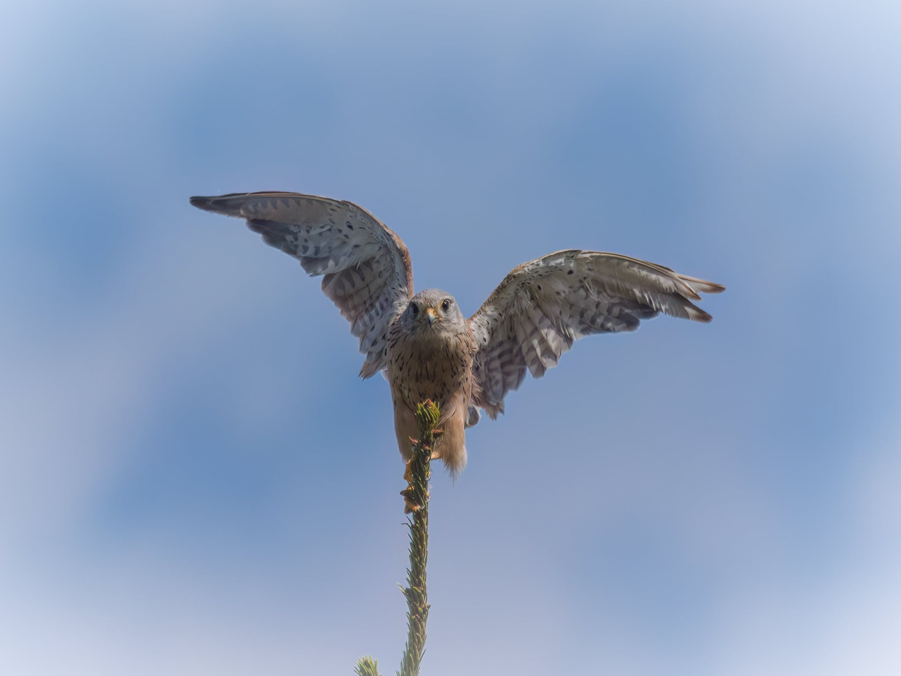
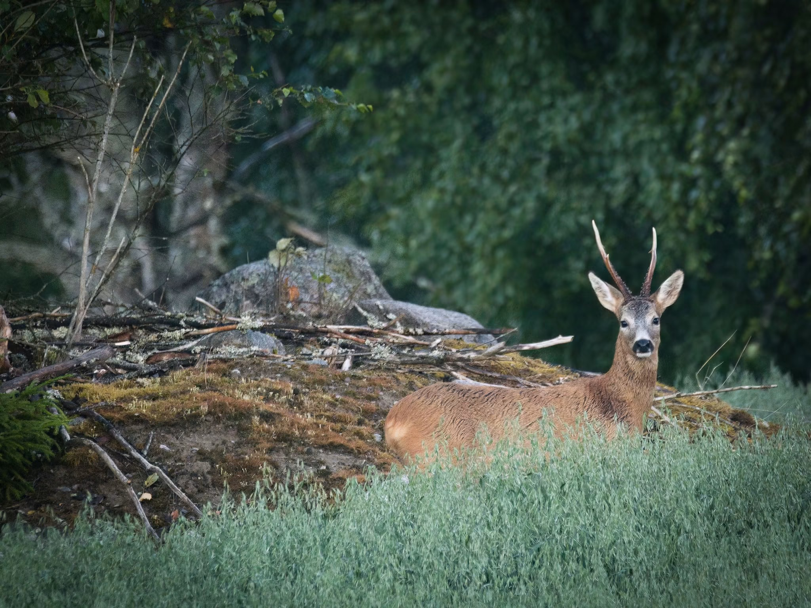
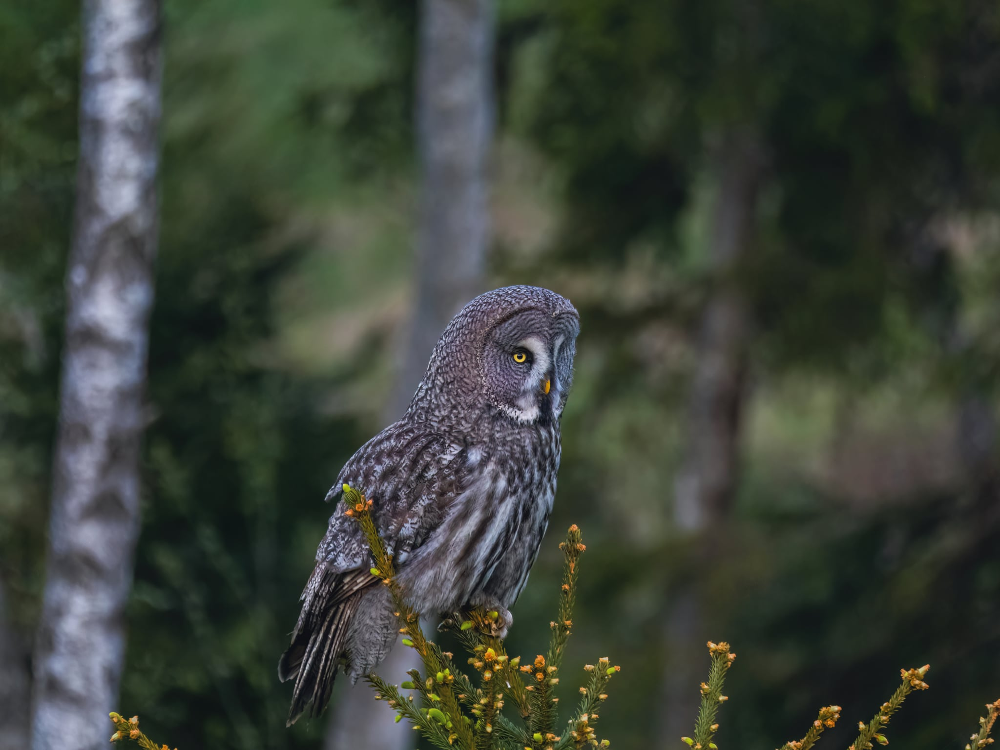
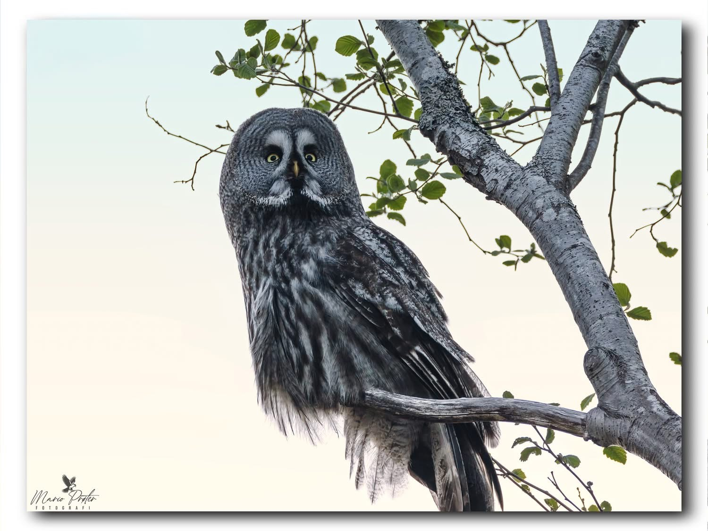
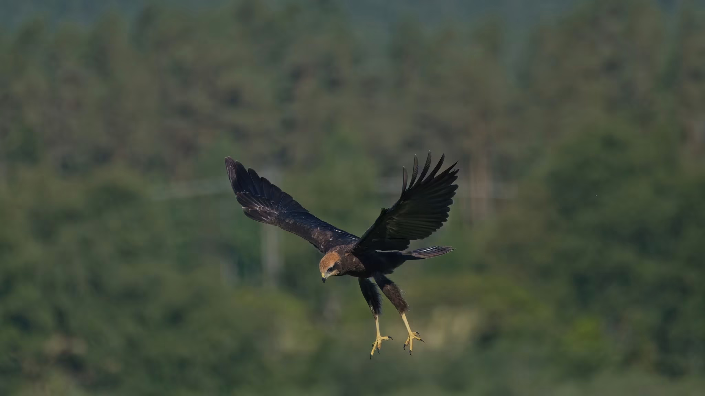
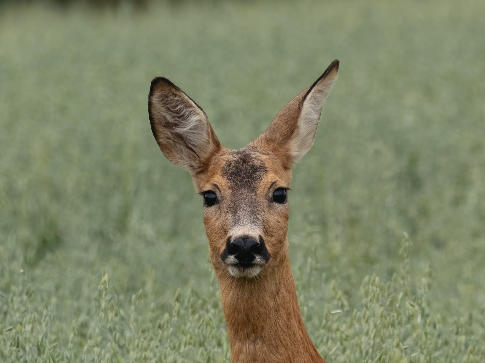
MARIO PRØTER
Ich fotografiere die wilde Natur Norwegens – mit besonderem Fokus auf Tiere, Lichtstimmungen und echte, ungestellte Momente. Jedes Bild der Wild-Norway-Kollektion entsteht aus meiner persönlichen Begegnung mit der Natur.
Prints & Anfragen
Wähle bei einem Bild „Print anfragen“. Der gewünschte Titel erscheint hier – danach kannst du deine Anfrage per E-Mail senden.
E-Mail-Adresse in index.html einsetzen